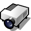
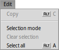
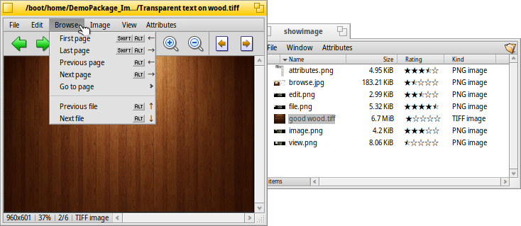

| Hakemisto |
| Tiedosto Muokkaa Selaa Kuva Näkymä Attribuutit Pikanäppäimet |
Kuvakatselin
| Työpöytäpalkki: | Ei löydy Työpöytäpalkista, käynnistetään normaalisti kaksoisnapsauttamalla tuettua tiedostoa. | |
| Sijainti: | /boot/system/apps/ShowImage | |
| Asetukset: | ~/config/settings/ShowImage_settings |
Kuvakatselin sallii sinun katsella kuvatiedostoja kaikisssa muodoissa, joita Tietomuuntimet tukevat. Uudet muodot tunnistetaan automaattisesti, kun niiden muuntimet lisätään järjestelmään. Tämä on tehty esimerkiksi Haikun vektorikuvaketiedostoille, WonderBrush-kuville tai kun WebP-kuvat tulivat käytettäviksi.
Kuvakatselin ei tarjoa muokkausmahdollisuuksia, mutta se sallii nelikulmaisen alueen valinnan ja sen tallennuksen missä tahansa muodossa. Voit myös kiertää ja kääntää kuvia, mutta nämä toiminnot eivät muuta kuvia fyysisesti. Ne lisäävät vain attribuutin, joka näyttää kuvan automaattisesti kierretyssä tai käännetyssä muodosssa, kun kuva avataan seuraavan kerran.
Käydään valikot lävitse järjestyksessä jättäen pois ilmeisimmät kohdat.
 Tiedosto
Tiedosto

-alivalikko luettelee viimeisimmät katsetut kuvat.
sallii sinun avata kuvan millä tahansa sen tiedostomuotoa tukevalla sovelluksella.
-alivalikko sallii sinun valita kuvan tiedostomuodon nykyisen kuvan tallentamiseksi.
avaa nopeasti Tausta-asetukset nykyisen kuvan asettamiseksi työtilasi(työtilojesi) taustakuvaksi.
Muokkaa

Kun on aktivoitu ̵ käytettävissä myös työkalupalkin katkoviivareunaisessa nelikulmiokuvakkeessa ̵ voit valita kuvan nelikulmaisen alueen, jonka voit raahata&pudottaa tiedoston tallentamiseksi Työpöydälle tai mihin tahansa kansioon. Raahaaminen hiiren kakkospainikkeella näyttää valikon, joka sallii sinun valita kuvan toisen tiedostomuodon.
Jos et halua vaihtaa tilaa etukäteen, niin voit luoda tämän valintakehyksen "normaalitilassa" pitämällä yksinkertaisesti CTRL-näppäimen alhaalla kun raahaat kuvaa hiiren ykköspainikkeella.
tai ESC-näppäin poistaa valintakehyksen.
Selaa

Kuvan avaamisen jälkeen voit nopeasti selata lävitse kaikki muut kuvat samassa kansiossa (tai kyselytulosikkunassa) painamalla näppäimiä ↑/↓ tai ←/→. Voit nähdä, kuinka valinta vaihtuu vastaavasti Seuraaja-ikkunassa.
On eräs nopea tapa avata nykyisen kuvan kansio ja jopa navigoida sen yläkansioon ja alikansioon. Se toimii juuri kuin alasporautumisnavigointi Seuraajassa napsauttamalla tilapalkin tietoaluetta, joka näyttää nykyisen kuvan koon, suurennustason ja muodon.
Valikon katsominen näyttää toisen selaustyypin: Jotkut kuvamuodot, kuten TIFF, voivat sisältää useita sivuja yhdessä tiedostossa. Komennot kuten ja sallivat sinun navigoida noilla sivuilla.
Kuva

-valikko tarjoaa muutamia kuvakatseluun välttämättömiä manipulaatioita: kuvan kiertoa ja kääntämistä.
Huomaa kuitenkin, että todellinen kuvatiedosto ei muutu. Tiedostoon lisätään vain attribuutti niin että ne näytetään kierrettynä tai käännettynä kun avaat kuvan seuraavan kerran.
Näkymä

-valikko tarjoaa aluksi kansion kaikkien kuvatiedostojen (tai kyselytulosikkunan) ja asettaa 2:sta sekunnista 20:een sekuntiin.
Muut komennot koskevat parhaillaan näytettävää kuvatiedostoa (muuttamatta ikkunan kokoa):
näyttää kuvan 100 prosentin loitonnustekijällä.
supistaa kuvan takaisin ikkunakehykseen, esim.: sen jälkeen kun siihen on loitonnuttu tai ikkunan koon muuttamisen jälkeen.
ja laajentavat ja kaventavat kuvaa 10 prosentin askelin. Loitontaminen ja lähentäminen tehdään hiiren rullauspainikkeella; kuvan venyttämiseksi suuremmaksi kuin ikkuna sinun on yksinkertaisesti napsautettava kuvaa hiiren ykköspainikkeella ja raahattava hiirtä ympäriinsä.
Kaksi asetusta ei koske parhaillaan näytettävää kuvaa ja ne on muistettava kun selataan kuvia peräkkäin:
soveltaa hyvin nopeaa suodatusta, kun loitonnus vähentää särmikkäitä viivoja ja tuottaa pehmeämmän tuloksen.
venyttää pienemmät kuvat täyttämään nykyisen ikkunakehyksen.
Sitten on -tila valitsimella joka korvaa kuvan alalaidan tiedostonimen.
Viimeiseksi, näyttää tai piilottaa graafiset ohjauskomponentit:

Vasemmalta oikealle: Edellinen kuva, seuraava kuva, aloita diaesitys (kokonäyttötilassa), valintatila, alkuperäinen koko, sovita ikkunaan, lähennä, loitonna, edellinen ja seuraava sivu (kun kuvamuoto, kuten TIFF salllii useita sivuja yhdessä tiedostossa) .
Useimmat yleisimmin käytetyistä komennoista on saatavilla asiayhteysvalikosta napsauttamalla hiiren kakkospainikketta kuvan päällä. Näppärää, kun ollaan kokonäyttötilassa.
Attribuutit

Tässä voit asettaa nykyisen kuvan välille 1 ja 10, tai valita sem asettamiseksi takaisin "arvioimaton"-tilaan (= "0").
Seuraajassa arvosanat näytetään sarakkeessa "Arvosanat" tähtien lukumääränä. Viisi tähteä esittää kymmentä mahdollista arvoa puolen tähden askelin. Esimerkiksi, arvosana 7 näytetään 7 / 2 = 3.5 tähteä: ★★★⯪☆.
Voit muokata arvosanoja suoraan myös Seuraajassa: Valitse tiedosto, valitse valikosta ja Sarkain-näppäimellä askeltamalla pääset "Arvosanat"-sarakkeeseen. Nyt voit kirjoittaa uuden numeroarvon, joka muuttuu tähdiksi napauttamalla ENTER-näppäintä.
Pikanäppäimet
Tässä on hyödyllisimpien pikanäppäinten luettelo:
| ← / ↑ | Edellinen kuva | |
| → / ↓ | Seuraava kuva | |
| DEL | Siirrä Roskakoriin | |
| + | Lähennä | |
| - | Loitonna | |
| 0 | Alkuperäinen koko (100% loitonnus/lähennys) | |
| 1 | Sovita ikkunaan | |
| ALT/OPTION ENTER | Vaihtele kokonäyttötilaa (myös kaksoisnapsautuksen kautta) | |
| CTRL | Pitämällä alhaalla näppäintä CTRL voit luoda valintakehyksen vaihtamatta valintatilaa eksplisiittisesti. |